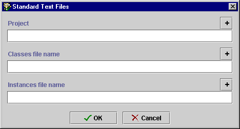
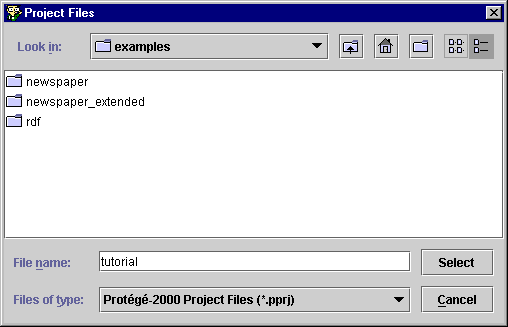
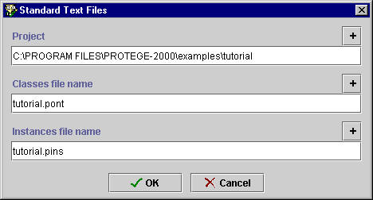

Creating
the Sample Project
Creating
the Sample Project

Although the tutorial is not very long, you may find you want to exit the
project before you have finished. If you save and name it now, you will be ready
to exit whenever is convenient.
To save the project:
- Click the Save Project button
at the top left of the Protégé-2000 window. You can also choose Save
from the Project menu. A dialog box is displayed.

- To choose the location where you want the project to be saved, click the
top
 button at the right of the Project line. Then double-click on the examples
folder to open it.
button at the right of the Project line. Then double-click on the examples
folder to open it.

- Type the name for the project, tutorial, in the File name entry
field.
- Click Select.
- You are returned to the Standard Text Files dialog box. Click OK to save.

Note: You can also choose a location by typing the full path name in the Project
line. The names of the other files will be filled in automatically.
Next: Creating and Naming Classes
Getting Started With Protégé